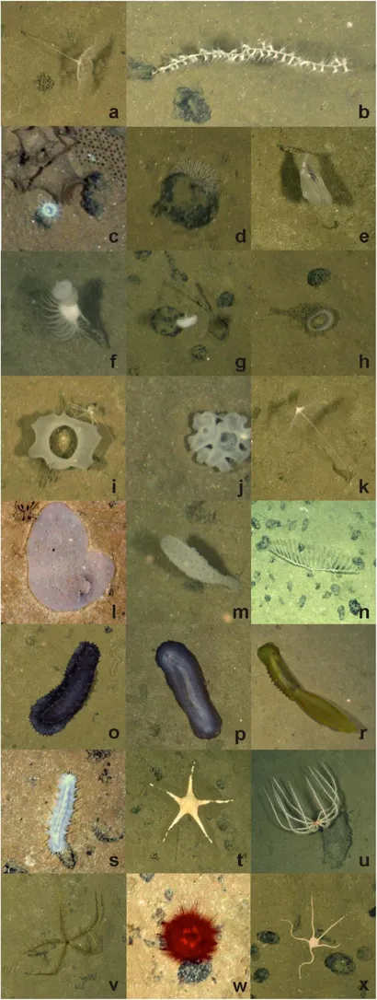
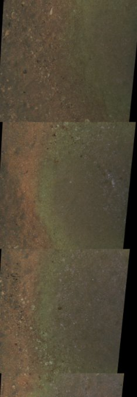
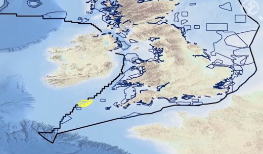
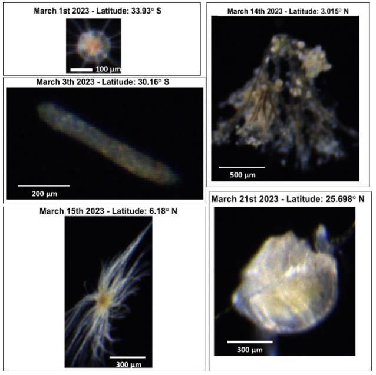
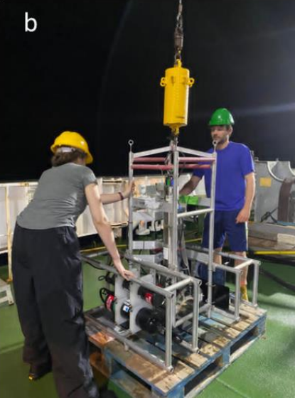

Workshop
This page provides all the necessary setup instructions to help you make the most of the workshop. It also includes details about the dataset we will be using and the example notebooks that will guide our exercises.
Coding environment
To ensure a smooth experience, we have set up a ready-to-use environment where all dependencies and example datasets are pre-installed. This means you won’t need to worry about installing anything manually—everything is configured and ready to go.
The environment is hosted on notebook servers, which are remote computing resources designed to facilitate interactive coding. These servers allow users to create, edit, and run Jupyter notebooks, which contain text, code, equations, and visualizations. Running code on a remote notebook server means computations will be performed on a powerful server rather than your local computer. This provides faster processing, access to specialized resources, and the flexibility to work from anywhere with an internet connection.
For this workshop, we will be using two remote services:
- NOC's Data Science Platform (DSP) – for NOC staff: More information
- JASMIN – for external users: More information
Tutorials
The following tutorials will be used during the workshop:
1) Introduction – Learn how to run a simple pipeline using Paidiverpy.
2) Benthic Dataset – Instructions and exercises for working with a benthic dataset.
3) Pelagic Dataset – Instructions and exercises for working with a pelagic dataset.
Datasets
Benthic Images (2012) – Haig Fras, UK
- Equipment: Camera mounted on the front of an ROV


Benthic Images (2018) – Clarion Clipperton Zone (~5000m depth)
- Equipment: Camera mounted on the front of an ROV
 
Pelagic Plankton Images (2023) – DY157 RSS Discovery Cruise
- Equipment: Red camera frame deployed vertically via winches
 